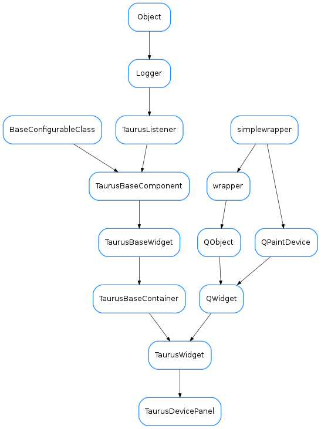

TaurusDevicePanel¶

-
class
TaurusDevicePanel(parent=None, model=None, palette=None, bound=True)[source]¶ Bases:
taurus.qt.qtgui.container.tauruswidget.TaurusWidgetTaurusDevPanel is a Taurus Application inspired in Jive and Atk Panel.
It Provides a Device selector and a panel for displaying information from the selected device.
-
READ_ONLY= False¶
-
classmethod
setAttributeFilters(klass, filters)[source]¶ It will set the attribute filters filters will be like: {device_regexp:[attribute_regexps]} example: {‘.*/VGCT-.*’: [‘ChannelState’,’p[0-9]’]}
-
classmethod
setCommandFilters(klass, filters)[source]¶ It will set the command filters filters will be like: {device_regexp:[command_regexps]} example:
{'.*/IPCT-.*': ( ('setmode',('SERIAL','LOCAL','STEP','FIXED','START','PROTECT')), ('onhv1',()), ('offhv1',()), ('onhv2',()), ('offhv2',()), ('sendcommand',()) ),}
-